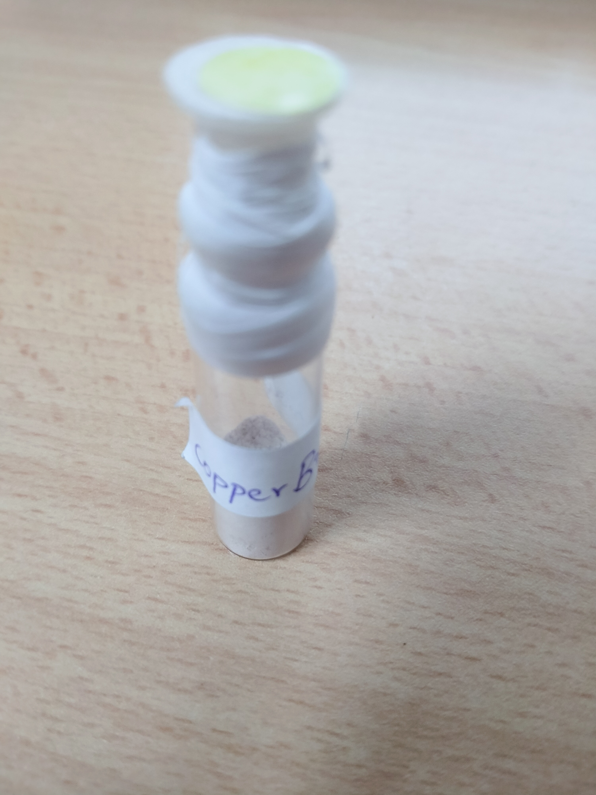
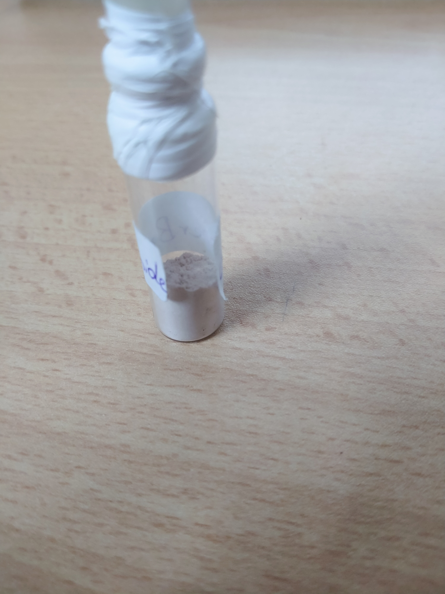

Preparation of Cuprous Bromide(CuBr)
| Sr.No |
Compound |
Molecular Weight |
Quantity |
Moles |
Equivalent |
| 1. |
CuSo4.5H2O |
249.64 |
20 g |
0.080 |
1 |
| 2. |
NaBr |
102.90 |
3.861 g |
0.0375 |
0.47 |
| 3. |
NaOH |
40 |
2.4 g |
0.06 |
0.76 |
| 4. |
NaHSO3 |
104.69 |
5.234 g |
0.05 |
0.63 |
| 5. |
DM Water |
|
60 ml |
|
3 |
| 6. |
DM Water |
|
40 ml |
|
2 |
Preparation:
- A 4-necked round bottomed flask (250 ml) was taken.
- CuSO4 5H2O (20g, 0.080 mole) was taken in the flask. Demineralized water (DM) (60 ml) was added. The reaction mixture was stirred to make the solution homogeneous.
- The reaction mixture was stirred for 20 minutes at room temperature.
- NaBr (3.861g, 0.0375 mole) was added to the reaction mixture.
- In another flask, a solution of NaOH (2.4g, 0.060 mole) in water (60 ml) was prepared. NaHSO3 (5.234g, 0.05 mole)) was added and the aqueous solution thus obtained was transferred to the dropping funnel. The solution was added drop by
drop to the reaction mass through the dropping funnel.
- On addition, an off-white solid precipitated out of the solution.
- The solid was then filtered, washed with DM water (200 ml), Methanol (80 ml), Ethyl acetate (50 ml) and Hexane (100 ml) and air dried. The solid thus obtained was used in Williamson’s ether synthesis as described under.
Pictures of my sample:

